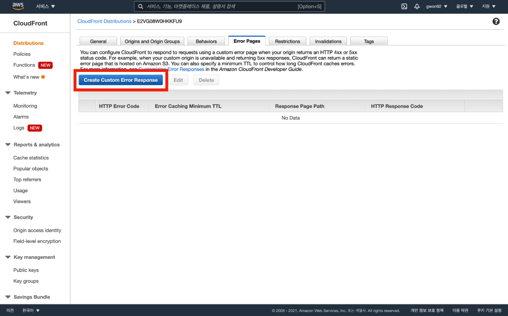

CloudFront 배포 생성
1. CloudFront 배포 생성
AWS 메인 콘솔 창에서 CloudFront를 검색하여 CloudFront 메인 콘솔로 이동한다.
Create Distribution 버튼을 클릭한다.
Get Started 버튼을 클릭한다.
Origin Domain Name에서 S3 버킷을 선택한다.
Viewer Protocol Policy에서 Redirect HTTP to HTTPS를 선택한다.
ACM에서 인증서 발급 시 입력했던 도메인 주소를 입력한다.
Custom SSL Certificate 선택 후 발급 받은 인증서를 선택한다.

Default Root Object에서 index.html을 입력 후 Create Distribution 버튼을 클릭한다.
배포 생성 후 Status와 State를 확인한다.
배포 ID를 클릭한다.
Error Pages 탭을 클릭한다.
Create Custom Error Response 버튼을 클릭한다.

HTTP Error Code에 403: Forbidden을 선택한다.
Response Page Path에 /index.html을 입력 하고 HTTP Response Code에 200: OK를 선택 후 Create 버튼을 클릭한다.
404에러 코드에도 똑같은 설정을 적용 후 Create 버튼을 클릭한다.
Error Response 생성 여부를 확인한다.
Status가 Deployed 상태인 것을 확인한다.
Domain Name 주소를 통해 접속 테스트를 진행한다.